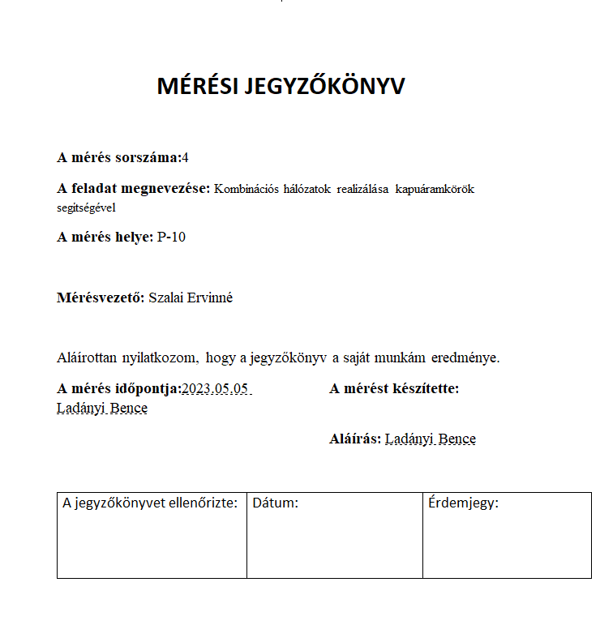
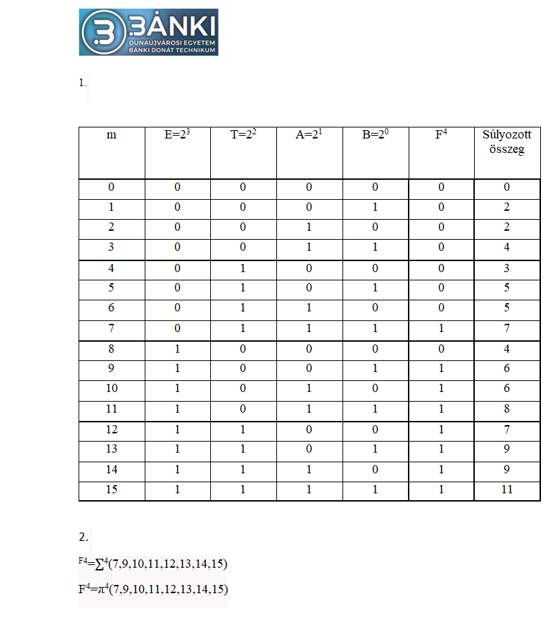
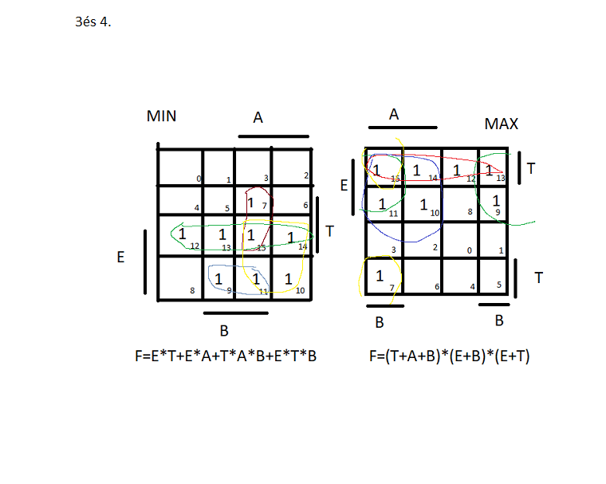
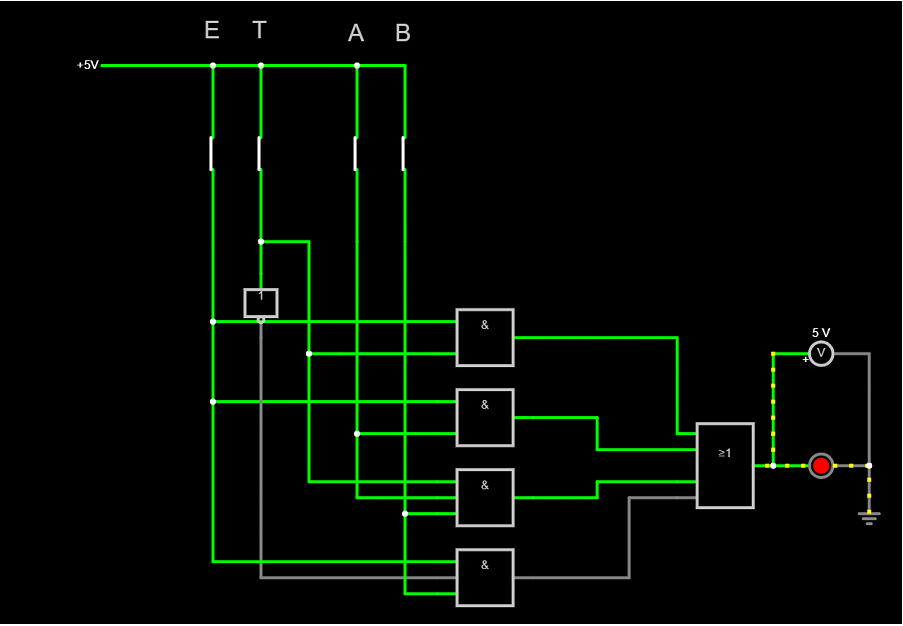

Digitális Áramkörök
Önreflexó
A tantárgy egy izgalmas és kihívásokkal teli tapasztalat volt számomra. A tantárgy során mélyebb megértést nyertem a digitális logika működéséről, és megtanultam, hogyan alkalmazhatók az alapvető logikai műveletek (AND, OR, NOT, XOR) különböző áramkörökben. Az áramkörök tervezésének és elemzésének alapjait is elsajátítottam, ami segített abban, hogy jobban átlássam a számítógépek, mikrovezérlők és más digitális rendszerek működését
Tematika:
- Logikai kapuk



